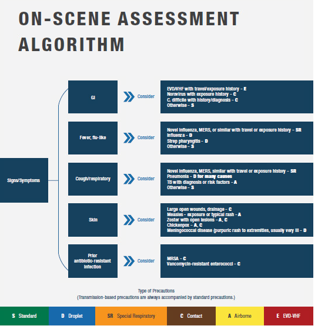

FIRST RESPONDERS AND AMBULANCE RESPONDERS3
• Responders should have access to relevant information via radio or computer aided
dispatch (CAD) to assure alerting of potential risks.
• Ask dispatch/communications center for additional information if needed.
• Identify patients who may be infected with a serious communicable disease by verbal
screening and symptoms and recognize the potential hazards.
• First responders recognizing a potentially infectious patient should notify dispatch/
communications center to assure the en route ambulance responders are prepared to
implement appropriate infection prevention and control measures.
• Apply PPE appropriate for the patient's condition prior to making direct patient contact.
• Patients with respiratory illnesses: Interview conducted at least 6 feet away from the
patient may provide some protection from infectious droplets.
• Ask any patient with respiratory symptoms to wear a surgical mask if they can tolerate it.
• Limit the number of EMS providers making patient contact to the minimum required to
perform tasks safely. Consider the strategy of one provider putting on PPE and managing
the patient while the other provider does not engage in patient care, but provides the
"doorway evaluation" and communications/charting. The second provider should be
prepared to quickly don the appropriate PPE should the first provider require assistance.
• Avoid unnecessary direct contact with the patient.
• Use caution when approaching the disoriented or delirious patient, as erratic behavior (e.g.,
flailing or staggering) can place EMS providers at additional risk of exposure.
• Keep nonessential equipment away from the patient, so as to minimize contamination on
the scene and in the ambulance
• If patient has nausea or vomiting, treat symptoms per protocols, provide emesis bag, and
contain any emesis.
• For profuse diarrhea, consider asking the patient to wear an absorbing undergarment and/or
wrapping the patient in an impermeable sheet to reduce contamination of other surfaces.
• Choose a receiving facility appropriate to the potential disease and alert them about the
patient and estimated time of arrival (ETA) as early as possible.
• Contact medical control with questions or for additional guidance on symptoms/signs or
patient care.
For geographically-associated serious communicable diseases like EVD or MERS, the
public health or EMS medical authority may request responders ask additional screening
questions including:
1. Travel history and/or direct exposure to potential case within the number of days of the
incubation period for the illness of interest (e.g., Ebola – 21 days, MERS – 14 days)
2. Specific signs and symptoms of illness
Contact the EMS or public health authority for guidance about family members or close
patient contacts who may be at the scene.
-----------------------------------------------------------------------------------------------
3 Adapted from Identify, Isolate, Inform: Emergency Medical Services (EMS) Systems and 9-1-1 Public Safety
in the United States. Note that this document is somewhat dated.
Content ©2020. All Rights Reserved.
Date last modified: April 12, 2020.
Created with SoftChalk
mobile page